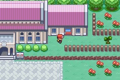

บทที่ 8 / 29
นิบิซิตี้<Pewter City>(2)
❖
ให้เราไปที่พิพิธภัณฑ์เมืองนิบิ โดยตัดต้นไม้และเข้าไปอีกประตูหนึ่ง คุยกับนักวิจัยข้างใน เขาจะมอบ Old Amber (ฟอสซิลเพทรา)ให้เรา พอเสร็จแล้วให้เราเดินไปทางทิศตะวันออกของฮานาดะซิตี้ ผ่านถนนหมายเลข 9 เข้าถ้ำอุโมงค์หิน
